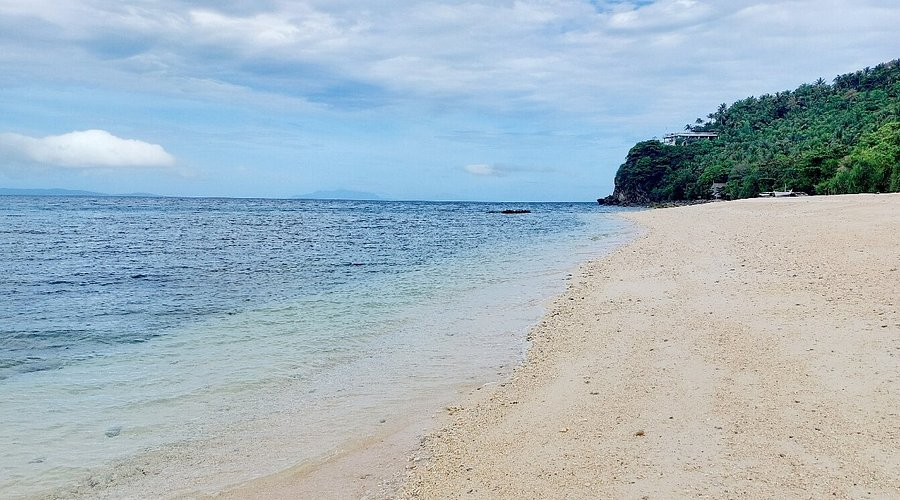
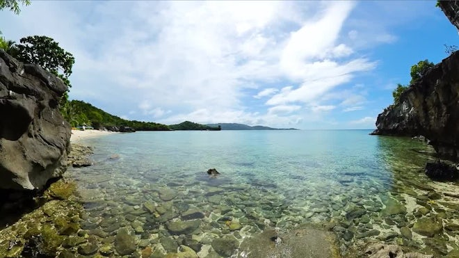
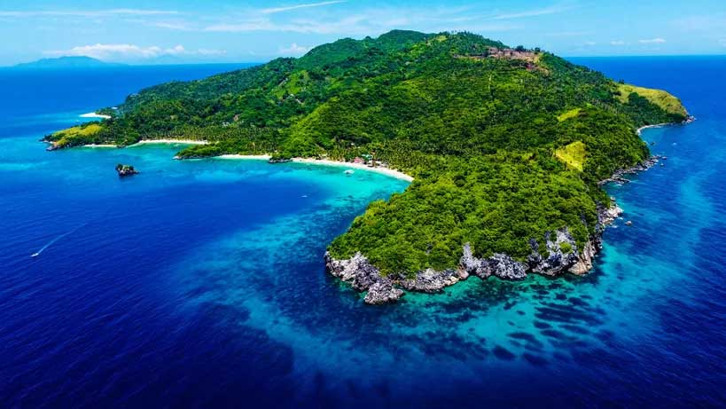
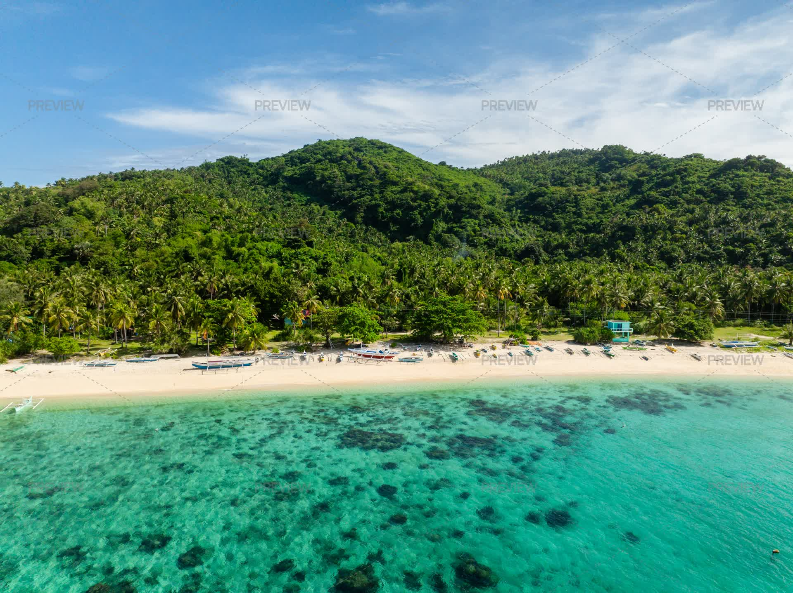

Explore the Beauty of Cobrador Island
Cobrador Island, also known as Nogoso Island, is Romblon's largest island and a perfect destination for beach lovers and adventure seekers. It is famous for its **pristine white sand beaches, crystal-clear waters, and vibrant marine life**, making it a must-visit spot for travelers.
Photos




Why Visit Cobrador Island?
- White sand beaches with clear turquoise waters
- Great for swimming, snorkeling, and diving
- Rich marine sanctuary with colorful corals and fishes
- Peaceful and less crowded, ideal for relaxation
- Stunning rock formations and scenic landscapes